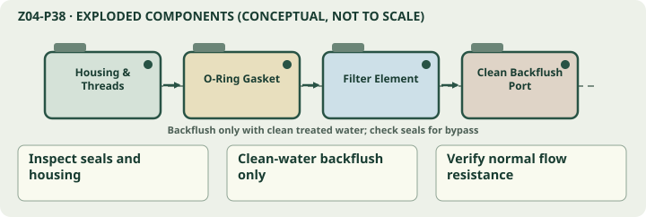

Z04-P38 · Water · New manuscript
Backflush and inspect field filter cartridges for flow or seal failure
Restore slowed flow safely with clean water and detect torn O-rings, loose threads or cracked housings early.
When it applies · Routine field and post-trip maintenance of reusable hollow-fiber, ceramic or carbon-core portable filters.
Equipment · Manufacturer backflush syringe or clean-water port, confirmed clean water, spare O-rings if supplied and product manual.

Actions
- Backflush hollow-fiber filters or gently scrub ceramic elements strictly per manufacturer instructions using only clean treated water—never raw water.[W04, W06, ED]
- Inspect cartridge threads, O-rings, check valves and housing seams for cracks, grit or pinched gaskets that let untreated water slip past the element.[W04, W28, ED]
- Track cumulative volume and filter age; replace carbon or composite cartridges on schedule rather than pushing degraded media beyond rated capacity.[W21, ED]
Failure recognition · Backflushing a hollow-fiber filter with raw stream water—contaminating the clean side—or forcing a clogged squeeze bag until seams burst.[W06, W04, ED]
Verify · Confirm steady normal flow rate, seated O-rings, clean backflush water source and intact housing before packing.[W04, W06, ED]
Stop or change course · If flow drops to a trickle despite clean backflushing, or if water bypasses suddenly at high speed, retire the cartridge and switch to boiling or another method.[W04, W28, W02]
Evidence and editorial notes
- W02 · CDC · How to Make Water Safe in an Emergency (2024-09-19)
- Section: Boil > Steps for boiling water · Conditions: Microbiologically suspect water with acceptable chemical source; portable heat and safe vessel
Support: Clarify cloudy water first. Rolling boil for one minute; above 6,500 feet for three minutes. Cool and cover in sanitized containers.
Limitations: Does not remove dissolved metals, nitrates, fuel, or cyanotoxins. · Conflicting evidence: Older Track B B009 omitted the 6,500 ft threshold; CDC threshold governs.
Editorial note: Require explicit timer verification after rolling boil starts. · Specialist reviewer: Drinking-water safety and public health
Primary source · checked 2026-11-24 - W04 · CDC · Water Treatment Options When Hiking, Camping, or Traveling (current web edition)
- Section: Water treatment methods > Filter and disinfect · Conditions: Untreated backcountry water; suitable devices and directions
Support: Filter capability varies. Filtering then disinfecting addresses gaps left by typical portable filters. Follow both manufacturers' directions.
Limitations: Effectiveness depends on pore rating, cartridge integrity, and manufacturer-verified test standards. · Conflicting evidence: None; consumer claims outside NSF/EPA standards are excluded.
Editorial note: Used to require multi-barrier pairing rather than relying on one filter alone. · Specialist reviewer: Drinking-water treatment specialist
Primary source · checked 2026-11-24 - W06 · CDC · How to Create an Emergency Water Supply (current web edition)
- Section: How to store emergency water; Safe storage containers · Conditions: Potable water intended for emergency storage
Support: Prefer sealed commercial water or clean food-grade tight-closing containers. Avoid containers that held toxic chemicals.
Limitations: Container shelf durability and rotation depend on plastic/material type and storage heat. · Conflicting evidence: None; reinforces strict raw-vs-clean segregation.
Editorial note: Used to enforce labeling and dedicated raw/potable vessel separation. · Specialist reviewer: Drinking-water safety and public health
Primary source · checked 2026-11-24 - W21 · CDC · Choosing Home Water Filters and Other Water Treatment Systems (current web edition)
- Section: Choosing Home Water Filters and Other Water Treatment Systems · Conditions: Selecting point-of-use filters by contaminant class
Support: Filter media differ sharply: carbon targets selected chemicals/taste, pore filtration targets cysts/bacteria, and reverse osmosis/distillation target broader dissolved solids; check independent certification (NSF/ANSI).
Limitations: No single uncertified improvised filter handles all microbial and chemical hazards. · Conflicting evidence: Counters marketing claims of universal survival filters.
Editorial note: Frames equipment selection around verified contaminant classes and certifications. · Specialist reviewer: Drinking-water treatment specialist
Primary source · checked 2026-11-24 - W28 · CDC · Water Treatment Options When Hiking, Camping, or Traveling (current web edition)
- Section: Water Treatment Options > Freeze Damage and Maintenance · Conditions: Hollow-fiber and ceramic filters used in freezing or near-freezing temperatures
Support: Freezing water inside a wet filter element can crack hollow fibers or ceramic pores invisibly, allowing untreated water to bypass the barrier; keep wet filters above freezing or replace suspect elements.
Limitations: Internal crack failure often shows no visible external leak. · Conflicting evidence: None; critical cold-weather filter failure mechanism.
Editorial note: Drives cold-weather filter protection and failure-recognition cards. · Specialist reviewer: Drinking-water treatment and cold-weather operations
Primary source · checked 2026-11-24
Source lineage · CDC filter guidance and manufacturer maintenance; new manuscript · Classification · New manuscript.